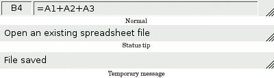

Setting Up the Status BarWith the menus and toolbars complete, we are ready to tackle the Spreadsheet application's status bar. In its normal state, the status bar contains two indicators: the current cell's location and the current cell's formula. The status bar is also used to display status tips and other temporary messages. The MainWindow constructor calls createStatusBar() to set up the status bar:
void MainWindow::createStatusBar()
{
locationLabel = new QLabel(" W999 ");
locationLabel->setAlignment(Qt::AlignHCenter);
locationLabel->setMinimumSize(locationLabel->sizeHint());
formulaLabel = new QLabel;
formulaLabel->setIndent(3);
statusBar()->addWidget(locationLabel);
statusBar()->addWidget(formulaLabel, 1);
connect(spreadsheet, SIGNAL(currentCellChanged(int, int, int, int)),
this, SLOT(updateStatusBar()));
connect(spreadsheet, SIGNAL(modified()),
this, SLOT(spreadsheetModified()));
updateStatusBar();
}
The QMainWindow::statusBar() function returns a pointer to the status bar. (The status bar is created the first time statusBar() is called.) The status indicators are simply QLabels whose text we change whenever necessary. We have added an indent to the formulaLabel so that the text shown in it is offset slightly from the left edge. When the QLabels are added to the status bar, they are automatically reparented to make them children of the status bar. Figure 3.8 shows that the two labels have different space requirements. The cell location indicator requires very little space, and when the window is re-sized, any extra space should go to the cell formula indicator on the right. This is achieved by specifying a stretch factor of 1 in the formula label's QStatusBar::addWidget() call. The location indicator has the default stretch factor of 0, meaning that it prefers not to be stretched. Figure 3.8. The Spreadsheet application's status bar When QStatusBar lays out indicator widgets, it tries to respect each widget's ideal size as given by QWidget::sizeHint() and then stretches any stretchable widgets to fill the available space. A widget's ideal size is itself dependent on the widget's contents and varies as we change the contents. To avoid constant resizing of the location indicator, we set its minimum size to be wide enough to contain the largest possible text ("W999"), with a little extra space. We also set its alignment to Qt::AlignHCenter to horizontally center the text. Near the end of the function, we connect two of Spreadsheet's signals to two of MainWindow's slots: updateStatusBar() and spreadsheetModified().
void MainWindow::updateStatusBar()
{
locationLabel->setText(spreadsheet->currentLocation());
formulaLabel->setText(spreadsheet->currentFormula());
}
The updateStatusBar() slot updates the cell location and the cell formula indicators. It is called whenever the user moves the cell cursor to a new cell. The slot is also used as an ordinary function at the end of createStatusBar() to initialize the indicators. This is necessary because Spreadsheet doesn't emit the currentCellChanged() signal at startup.
void MainWindow::spreadsheetModified()
{
setWindowModified(true);
updateStatusBar();
}
The spreadsheetModified() slot sets the windowModified property to true, updating the title bar. The function also updates the location and formula indicators so that they reflect the current state of affairs. |